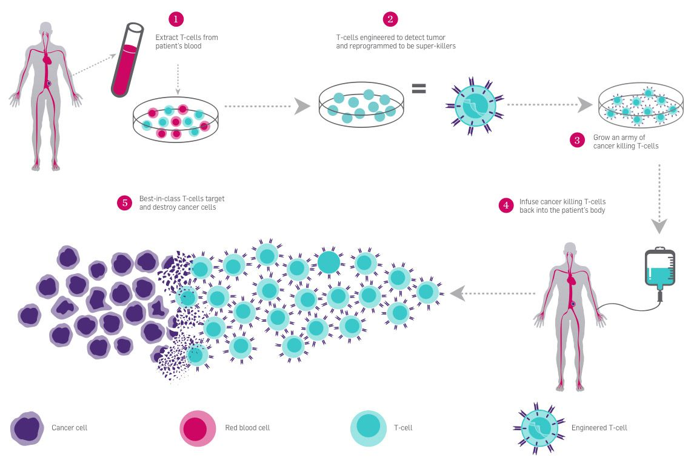

Un equipo de investigadores del National Institutes of Health y la University of Pennsylvania anunció resultados de un ensayo clínico temprano en el que una terapia basada en CRISPR logró reducir tumores en pacientes con cáncer avanzado. El estudio se publicó en la revista Nature Medicine y es relevante porque demuestra el potencial de editar células del sistema inmune para atacar el cáncer de forma más precisa.
Como lo descubrieron?
Los científicos modificaron genéticamente células T (un tipo de célula del sistema inmune) para que reconocieran mejor las células cancerosas. En varios pacientes, los tumores se redujeron o dejaron de crecer durante el periodo de seguimiento.
Este enfoque busca que el propio cuerpo actúe como tratamiento, en lugar de depender solo de quimioterapia o radiación.

Como lograron hacerlo?
El proceso siguió tres pasos principales:
1. Extrajeron células T del paciente.
2. Usaron CRISPR para editar genes específicos en laboratorio.
3. Reintrodujeron las células modificadas en el cuerpo.
En términos simples, es como reprogramar soldados del sistema inmune para que identifiquen con mayor precisión a su enemigo.
Contexto cientifico
El estudio es preliminar y se encuentra en fase temprana, por lo que no representa una cura definitiva. Sin embargo, muestra que la edición genética puede ser una herramienta viable para desarrollar terapias personalizadas contra el cáncer.
CRISPR es una tecnología que permite cortar y modificar el ADN en puntos específicos. En la última década, ha transformado áreas como la biología molecular, la medicina y la agricultura, su aplicación en humanos aún se estudia cuidadosamente debido a posibles efectos secundarios y riesgos éticos.
Próximos pasos
“Estamos viendo señales prometedoras de que las células editadas pueden persistir y actuar contra el cáncer”, explicaron los investigadores en el estudio publicado en Nature Medicine.
Los científicos planean ampliar el ensayo con más pacientes y evaluar efectos a largo plazo, incluyendo seguridad, duración de la respuesta y posibles mejoras en la técnica.